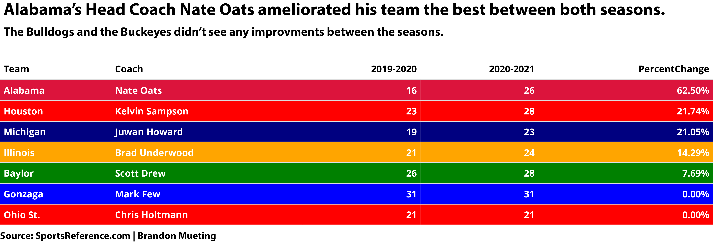

The College Basketball season after for the first time in NCAA history where the March Madness tournament was canceled. Teams suffered from losing the postseason play like the Dayton Flyers who seemed to be a possible one seed lead by former player Obi Toppin. This season was different. These teams wanted to continue the path they have laid out for them in the previous season. None of the basketball teams could do this without their head coach. The Naismith College Coach of the Year is given to a men’s college basketball coach and a women’s basketball coach. This year, Gonzaga’s Head Coach Mark Few won the award after an almost perfect season until they lost in the National Championship against Baylor. Many people all over social media question, did Mark Few deserve that award over the other coaches? I wanted to dissect more into this, I decided to take six other head coaches with Mark Few to determine who should have taken the Naismith College Coach of the Year.
The six other candidates:
Baylor’s Scott Drew
Michigan’s Juwan Howard
Ohio St.’s Chris Holtmann
Illinois’ Brad Underwood
Houston’s Kelvin Sampson
Alabama’s Nate Oats
library(tidyverse)## ── Attaching packages ─────────────────────────────────────── tidyverse 1.3.1 ──## ✓ ggplot2 3.3.3 ✓ purrr 0.3.4
## ✓ tibble 3.1.1 ✓ dplyr 1.0.5
## ✓ tidyr 1.1.3 ✓ stringr 1.4.0
## ✓ readr 1.4.0 ✓ forcats 0.5.1## ── Conflicts ────────────────────────────────────────── tidyverse_conflicts() ──
## x dplyr::filter() masks stats::filter()
## x dplyr::lag() masks stats::lag()sevencandidates <-read_csv("~/Desktop/Basketball Coach of the Year 6 - Sheet1.csv")##
## ── Column specification ────────────────────────────────────────────────────────
## cols(
## .default = col_double(),
## Team = col_character(),
## FinalAP = col_character(),
## Season = col_character(),
## Coach = col_character()
## )
## ℹ Use `spec()` for the full column specifications.The first thing we want to look into is how many wins each team had for the 2020-2021 season. Success in each basketball program shapes the head coach’s future whether his contract gets extended or he gets let go because of how poorly he coaches the team.
currentseason<- sevencandidates %>% filter(Season=="2020-2021")Taking a look at past winners of the Naismith College Coach of the Year award, the win column always showed a very high number. For example last year’s Naismith College Coach of the Year winner, Dayton Flyers Head Coach Anthony Grant, led his team with a record of 29 wins and only two losses. The 2014-2015 winner, Head Coach of the Kentucky Wildcats John Calipari, had almost a perfect season with 38 wins and only one loss in the March Madness tournament. Most of the time the coach with the most wins is usually awarded as Coach of the Year.
library(ggalt)## Registered S3 methods overwritten by 'ggalt':
## method from
## grid.draw.absoluteGrob ggplot2
## grobHeight.absoluteGrob ggplot2
## grobWidth.absoluteGrob ggplot2
## grobX.absoluteGrob ggplot2
## grobY.absoluteGrob ggplot2ggplot() +
geom_lollipop(
data=currentseason,
aes(y=reorder(Team, Wins), x=Wins),
horizontal = TRUE
) + theme_minimal() +
labs(title = "Gonzaga is the clear dominant team with one loss.", y="Team", subtitle="Houston and Baylor trails by a couple wins.", caption="Source: Sports Reference | By Brandon Mueting") +theme(
plot.title = element_text(size = 16, face = "bold"),
axis.title = element_text(size = 10),
plot.subtitle = element_text(size=12),
panel.grid.minor = element_blank()
) + geom_lollipop(
data=currentseason,
aes(y=Team, x=Wins),
horizontal = TRUE,
color = "red"
) Gonzaga won the most games out of these seven teams. Like I said earlier with the example of Anthony Grant and John Calipari, the most winning coach is usually the coach that wins this award. We know that Mark Few definitely deserves to be in the candidacy talk, but how does the Bulldogs’ strength of schedule compare to the other six teams? If you are a head coach of a basketball program and you are facing tough teams you have to figure out how to coach your players to either match or beat your opponent’s skill. Back in 2013-2014 the Naismith Coach of the Year award winner Greg Marshall, coached the Wichita St. Shockers going undefeated in the regular season only to lose in the second round to Kentucky in March Madness. Many argued the reason they went undefeated is because they were in the Missouri Valley Conference. The Missouri Valley Conference is not one of the Power 6 conferences. Just like Gonzaga the West Coast Conference is not a Power 6 Conference.
Gonzaga won the most games out of these seven teams. Like I said earlier with the example of Anthony Grant and John Calipari, the most winning coach is usually the coach that wins this award. We know that Mark Few definitely deserves to be in the candidacy talk, but how does the Bulldogs’ strength of schedule compare to the other six teams? If you are a head coach of a basketball program and you are facing tough teams you have to figure out how to coach your players to either match or beat your opponent’s skill. Back in 2013-2014 the Naismith Coach of the Year award winner Greg Marshall, coached the Wichita St. Shockers going undefeated in the regular season only to lose in the second round to Kentucky in March Madness. Many argued the reason they went undefeated is because they were in the Missouri Valley Conference. The Missouri Valley Conference is not one of the Power 6 conferences. Just like Gonzaga the West Coast Conference is not a Power 6 Conference.
currentseason %>%
summarise(
mean(Wins) ,
mean(SOS))## # A tibble: 1 x 2
## `mean(Wins)` `mean(SOS)`
## <dbl> <dbl>
## 1 25.9 9.07The average wins for all seven of these teams were almost 26 wins and the average strength of schedule rated around nine.. The next graphic is going to show which teams won tough games throughout the season. The size of each bubbles will also depend on their final ranking in the AP Poll.
library(ggrepel)ggplot() +
geom_point(
data=currentseason,
aes(x=Wins, y=SOS, size=FinalAP),
color="red",
alpha=.5) +
geom_vline(xintercept = 25.85714) +
geom_hline(yintercept = 9.068571) +
geom_text_repel(
data=currentseason,
aes(x=Wins, y=SOS, label=Team)) +
labs(title="Alabama won the most difficult games on their schedule.", subtitle="Mark Few's Bulldogs lacked tough competition in their schedule.", caption="Source: Sports Reference | By Brandon Mueting") + theme_minimal() +
theme(
plot.title = element_text(size = 14, face = "bold"),
axis.title = element_text(size = 10),
plot.subtitle = element_text(size=12),
panel.grid.minor = element_blank()
)## Warning: Using size for a discrete variable is not advised. Ohio St., Michigan and Illinois obviously had some tough games as they played a tougher schedule, while Alabama was the team who won the most games while having a tough schedule. Meanwhile Gonzaga, Houston and Baylor won a lot of their games, but didn’t have as many tough games as the other four teams. However Gonzaga’s last AP Poll ranking was #1 ahead of the other teams.
Ohio St., Michigan and Illinois obviously had some tough games as they played a tougher schedule, while Alabama was the team who won the most games while having a tough schedule. Meanwhile Gonzaga, Houston and Baylor won a lot of their games, but didn’t have as many tough games as the other four teams. However Gonzaga’s last AP Poll ranking was #1 ahead of the other teams.
Another factor that makes a great coach is how much the team improved from the previous season. In the 2011-2012 season Jim Larranaga, head coach of the Miami Hurricanes, ended with a 20-13 record. The following season Head Coach Larranaga ended the season with a record of 29-7. That season he won the Naismith Coach of the Year award. Out of the seven teams I want to know the percentage difference from the previous season for all the teams and see which head coach improved their squad the most.
library(kableExtra)##
## Attaching package: 'kableExtra'## The following object is masked from 'package:dplyr':
##
## group_rowstablecandidates <- sevencandidates %>%
group_by(Team, Season, Wins, Coach) %>%
summarise(Wins = sum(Wins)) %>%
pivot_wider(names_from=Season, values_from = Wins) %>%
mutate(PercentChange = (`2020-2021`-`2019-2020`)/`2019-2020`) %>%
arrange(desc(PercentChange))## `summarise()` has grouped output by 'Team', 'Season', 'Wins'. You can override using the `.groups` argument.library(formattable)tablecandidates %>%
mutate(PercentChange = percent(PercentChange)) %>%
kable(escape=F) %>%
kable_styling(bootstrap_options = c("striped", "condensed")) %>%
row_spec(6, bold = T, color = "white", background = "blue") %>%
row_spec(1, bold = T, color = "white", background = "crimson") %>%
row_spec(2, bold = T, color = "white", background = "red") %>%
row_spec(3, bold = T, color = "white", background = "navy") %>%
row_spec(4, bold = T, color = "white", background = "orange") %>%
row_spec(5, bold = T, color = "white", background = "green") %>%
row_spec(7, bold = T, color = "white", background = "red") %>%
column_spec(1, bold=T) %>%
save_kable("candidates.pdf")## Note that HTML color may not be displayed on PDF properly.## save_kable will have the best result with magick installed.knitr::include_graphics("candidatesNEW-01.png")
The Alabama Crimson Tide has the biggest percentage change in wins from the previous season.They did 62.50% better than last season while Gonzaga didn’t see any record improvements from the previous season. My conclusion here is Mark Few deserves the award because in the past the coaches with the most wins usually get the award, however Mark Few wasn’t the clear cut favorite as Alabama’s Nate Oats coached his team through a tough schedule and won a few of those games. While also seeing the biggest improvement from last season out of these seven teams.